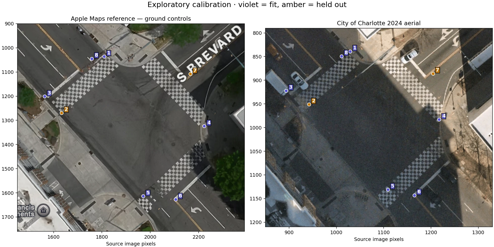
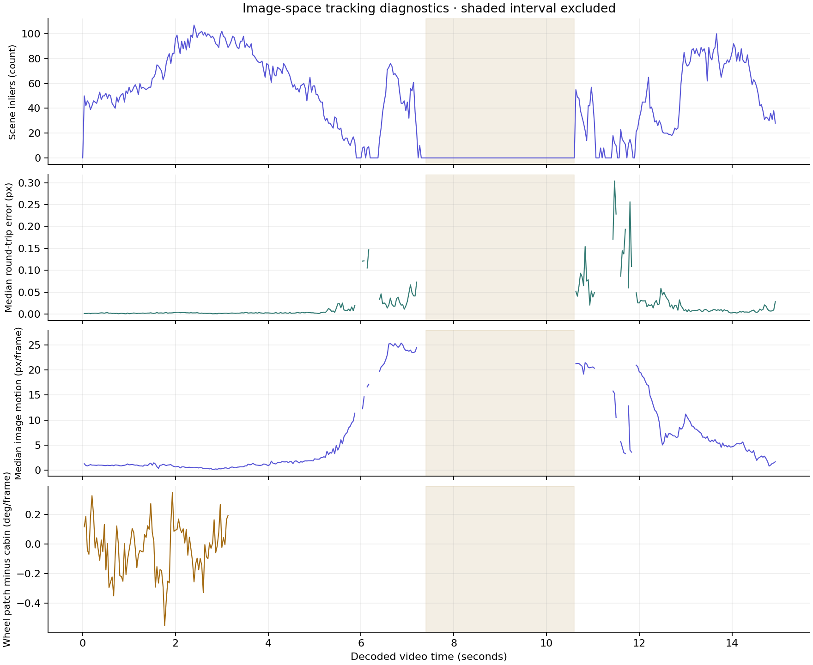

RC F / Analysis review
E Brooklyn Village Avenue × S Brevard Street
Tracked image features over the original footage, with visible gaps and calibration diagnostics. Physical vehicle telemetry awaits validated camera and ground geometry.
Video observations
Loading…Blue points pass the pairwise scene-model check. Amber points are model outliers. Displayed vectors connect consecutive decoded frames. Wheel points show an experimental local patch fit.
Ground calibration
2024 CITY AERIAL
The city aerial supplies a georeferenced map grid. Ground pixels near the intersection represent approximately 0.112 m per pixel. Web Mercator coordinates were transformed to local UTM metres.
Six manually selected ground controls give a 0.57 m fit RMS. Two held-out controls differ by 1.26 m and 1.29 m. Source geolocation error and manual selection uncertainty also apply.
This tests the alignment of the two overhead images. Video-to-ground correspondence, camera calibration and phone-to-body alignment remain unresolved.
Pixel quantities describe tracked image motion. Independent stationary-scene validation and physical pose recovery remain pending.
Tracking diagnostics
DECODED VIDEO TIMESTAMPS